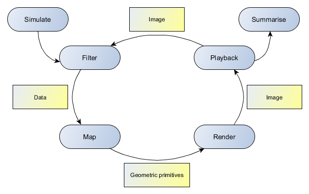
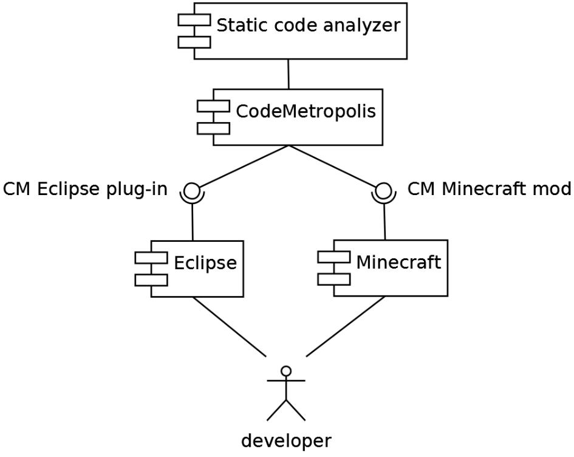

First steps
Our main contribution with the CodeMetropolis is to connect data visualisation with hight end-user graphic capabilities. This tool processes the basic source code metrics as input and generates a MineCraft world with buildings, districts and gardens. The tool in 2013, represented at first time on a conference was in prototype state. This version was written in C# using the .Net framework. It is a command line tool which takes the previously mentioned graph as input and creates a Minecraft world from it. There are a couple of open-source API-s for every major language which support editing or creations over these worlds. Our tool uses the Substrate library for .NET Framework.
The representation has two main levels. On the data level, each entity has its own property set – for example metrics. In the current version, these are loaded from the previously mentioned graph, but we plan to support other data sources, for example XML files. These data are displayed on the metaphor level. All buildings in the metropolis belong to this. The buildings and the world itself has a couple of attributes which control visual appearance. The properties are mapped to the attributes in order to visualise the data. However, in the current version this mapping is hardcoded, the further versions will support customisation with a sophisticated mapping language.
CodeMetropolis implements multilevel data visualisation: Minecraft allows fly, seeing the large scale size of classes and namespaces. Users can walk on the streets and compare the size and the complexity of the methods. It is possible to go inside the methods.
CodeMetropolis implements multilevel data visualisation: Minecraft allows fly, seeing the large scale size of classes and namespaces. Users can walk on the streets and compare the size and the complexity of the methods. It is possible to go inside the methods.
Benefits and other future possibilities
- Bad smells detection
- Inspect the structure of code
- Extending the palette of the entities and attributes: The future version of our converter will use an extended palette of the blocks supported in Minecraft. For example, flowers to decorate beautiful code and zombies (hostile creatures) to indicate bad practices. In addition according to our plans it will be possible explore inner structure of methods with furniture.
- Inter-user communication: Besides the traditional forms of communication like textual chat and audio connection users will be able to use in-game items and techniques to interact with each other. For example, they could leave signs as notification or if they are walking together in the virtual world they could simply point to or go to a specific part of the “code”.
- Understanding inter-metrical relations: CodeMetropolis will use various sophisticated metaphors. For example, a floor represents a method. Its width and length are mapped to its complexity and its height indicates its size. Furthermore, the number of windows and doors visualise the count of its parameters.
- Round-trip source code management: The changes between the source code and the metropolis will be propagated to each other.
- Support code annotation: When developers are inspecting the source code, they could leave comments to mark its parts. A future version of our conversion tool will support code annotation. When developers put a wall or post a sign on some entities (floors, buildings) the text on it will be inserted into the source code as a comment. (Planned before)
- Present code history gathered from the version controlling system.
- Identify tested code: For example, torches and glowstones can be used to illuminate the building representing the tested parts of the code.
- Understanding inter-metrical relations: CodeMetropolis will use various sophisticated metaphors. For example, a floor represents a method. Its width and length are mapped to its complexity and its height indicates its size. Furthermore, the number of windows and doors visualise the count of its parameters.
- In-game explanations: Post and wall sings and books will be used to explain the meaning of the various attributes and to show the source code of the corresponding element.
- Navigation support: We plan to implement a mini-map and a teleportation system. The related classes will be connected with railways allowing the users to navigate and see the connections.
Negative opinios:
- Great distances. The metropolis of a large or medium scale project can be huge and the players need a lot of time to navigate in it. We plan to solve this problem by implementing a quick map and a navigation system.
- Learning curves.
- The last problem was the lack of simultaneous data visualisation. The users could identify only three attributes: width, length, and height. This limited set is not enough to visualise the complex items of the data level.
In this year we represent CodeMetropolis on VISSOFT conference too.
Move forward with creating Eclipse plug-in
In 2015 we developed a new version of CodeMetropolis, with the users can invoke the visualization directly from the IDE. The new version of the tool now includes an Eclipse plug-in and a MineCraft modification in addition to the analysis and visualization modules, which have also been extended with some new features. Our goal was to build a bridge between coding and visualization. We chose Eclipse among the IDEs because it was a common tool for Java developers. We implemented a set of plugins which was able to connect Eclipse and CodeMetropolis, hence it became capable of integrating an elaborated visualization technique without disturbing the daily routine of developers. This version was presented in 2015 on SCAM conference.
In this new version of CodeMetropolis, data visualization has four phases: filtering, mapping, rendering, and displaying.

Modifications
The implementation has three interlinked components. The first is Eclipse, the IDE itself, the second is Minecraft, which displays the generated city, and SourceMeter, a static code analyzer, which provides the metrics and the structures of the source code. These are connected via CodeMetropolis that converts the data to visual representation using the given mapping and city metaphor. Since the 2013 release of CodeMetropolis toolkit, it has undergone significant changes. A new placing algorithm has been implemented to provicee a more optimal city layout. A brand new build system has also been addid which resulted 100 times faster block creation. The mapping format has been completely redesigned to provice a a cleaner syntex and a lot more options. The background logic of the toolkit had to be changed at multiple points to fit our intentions.

Minecraft modifications:
- Synchronizing: to prevent any concurrent modification with the game, it disables the user interface while building the generated city. After the conversion the target world is reloaded. We also provide informative messages to notify the user about the state of the process.
- Positioning the player: it allows the external processes to set the position and orientation of the player.